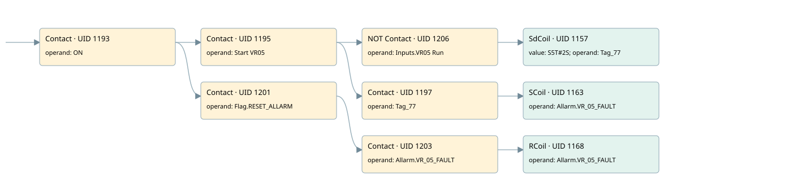

vr05
allarms 1 · 검색 색인 순서 32 · 원본 내부 NID 추정 34
백업 PLF 원본의 3062874 바이트 위치에서 복원한 XML. 검색 문서 1812의 객체 키 161022007262000000000000와 연결했다. 이름 해석 10/10개. 남은 RefId는 상수 또는 미해석 참조다.
연결 구조 다시 그리기
원본 Part/PCon/Wire를 이용한 연결도다. TIA 화면의 래더 배치 또는 실행 결과를 재현한 그림은 아니다. 핀 연결은 아래 표와 원본 XML을 기준으로 읽는다. 노드 위에 마우스를 두면 피연산자 이름을 볼 수 있다.

접점·코일·블록과 피연산자
| Part UID | Gate | Negated 핀 | 연결 피연산자 |
|---|---|---|---|
| 1193 | Contact | operand = ON | |
| 1195 | Contact | operand = Start VR05 | |
| 1206 | Contact | operand | operand = Inputs.VR05 Run |
| 1157 | SdCoil | value = S5T#2S; operand = Tag_77 | |
| 1197 | Contact | operand = Tag_77 | |
| 1163 | SCoil | operand = Allarm.VR_05_FAULT | |
| 1201 | Contact | operand = Flag.RESET_ALLARM | |
| 1203 | Contact | operand = Allarm.VR_05_FAULT | |
| 1168 | RCoil | operand = Allarm.VR_05_FAULT |
접점 경로를 펼친 조건식
Contact·O/A·비교기의 원본 연결을 읽기 쉽게 펼친 보조 해석이다. POWER는 전원 레일 시작을 뜻한다. 호출 블록·에지·타이머의 내부 동작과 다중 쓰기 순서는 이 표로 실행 검증하지 않았다. 미해석 핀과 RefId는 원문 연결표에서 확인한다.
| UID | 동작 | 대상 | 원본 접점 경로 | 내용 |
|---|---|---|---|---|
| 1157 | SdCoil | Tag_77 | ((ON AND Start VR05) AND NOT [Inputs.VR05 Run]) | 시간 동작 SdCoil; 타이머 의미 추가 확인 / 시간 인자 S5T#2S |
| 1163 | SCoil | Allarm.VR_05_FAULT | ((ON AND Start VR05) AND Tag_77) | 조건 성립 시 Set |
| 1168 | RCoil | Allarm.VR_05_FAULT | ((ON AND Flag.RESET_ALLARM) AND Allarm.VR_05_FAULT) | 조건 성립 시 Reset |
원본 배선 연결
| Wire UID | 동일 Wire 연결 끝점 |
|---|---|
| 1205 | Powerrail {} ↔ Part 1193.in |
| 1179 | ORef 1169 (ON) ↔ Part 1193.operand |
| 1194 | Part 1193.out ↔ Part 1195.in ↔ Part 1201.in |
| 1180 | ORef 1170 (Start VR05) ↔ Part 1195.operand |
| 1196 | Part 1195.out ↔ Part 1206.in ↔ Part 1197.in |
| 1209 | ORef 1207 (Inputs.VR05 Run) ↔ Part 1206.operand |
| 21 | Part 1206.out ↔ Part 1157.in |
| 1181 | ORef 1171 (S5T#2S) ↔ Part 1157.value |
| 1182 | ORef 1172 (Tag_77) ↔ Part 1157.operand |
| 1183 | ORef 1173 (Tag_77) ↔ Part 1197.operand |
| 22 | Part 1197.out ↔ Part 1163.in |
| 1186 | ORef 1175 (Allarm.VR_05_FAULT) ↔ Part 1163.operand |
| 1188 | ORef 1176 (Flag.RESET_ALLARM) ↔ Part 1201.operand |
| 1202 | Part 1201.out ↔ Part 1203.in |
| 1189 | ORef 1177 (Allarm.VR_05_FAULT) ↔ Part 1203.operand |
| 1204 | Part 1203.out ↔ Part 1168.in |
| 1191 | ORef 1178 (Allarm.VR_05_FAULT) ↔ Part 1168.operand |
식별자 해석 근거 10개
| ORef UID | RefId | 이름 | IdentXmlPart 파일 | 해석 방법 |
|---|---|---|---|---|
| 1169 | 1 | ON | 0658-IdentXmlPart.xml | UID/RID + search-text + NID agreement |
| 1170 | 138 | Start VR05 | 0658-IdentXmlPart.xml | UID/RID + search-text + NID agreement |
| 1207 | 302 | Inputs.VR05 Run | 0657-IdentXmlPart.xml | UID/RID + search-text + NID agreement |
| 1172 | 139 | Tag_77 | 0658-IdentXmlPart.xml | UID/RID + search-text + NID agreement |
| 1171 | 28 | S5T#2S | 0656-IdentXmlPart.xml | literal candidate: UID/RID/NID + nearby named declarations + search-text agreement |
| 1173 | 139 | Tag_77 | 0658-IdentXmlPart.xml | UID/RID + search-text + NID agreement |
| 1175 | 141 | Allarm.VR_05_FAULT | 0657-IdentXmlPart.xml | UID/RID + search-text + NID agreement |
| 1176 | 13 | Flag.RESET_ALLARM | 0657-IdentXmlPart.xml | UID/RID + search-text + NID agreement |
| 1177 | 141 | Allarm.VR_05_FAULT | 0657-IdentXmlPart.xml | UID/RID + search-text + NID agreement |
| 1178 | 141 | Allarm.VR_05_FAULT | 0657-IdentXmlPart.xml | UID/RID + search-text + NID agreement |
검색 코드 보조 자료
참조 명칭을 찾기 위한 자료이며 실행 순서나 AND/OR 관계는 위 연결표로 확인한다.
"on" "start vr05" "inputs"."vr05 run" "tag_77" s5t#2s "flag".reset_allarm "allarm".vr_05_fault "allarm".vr_05_fault "tag_77" "allarm".vr_05_fault